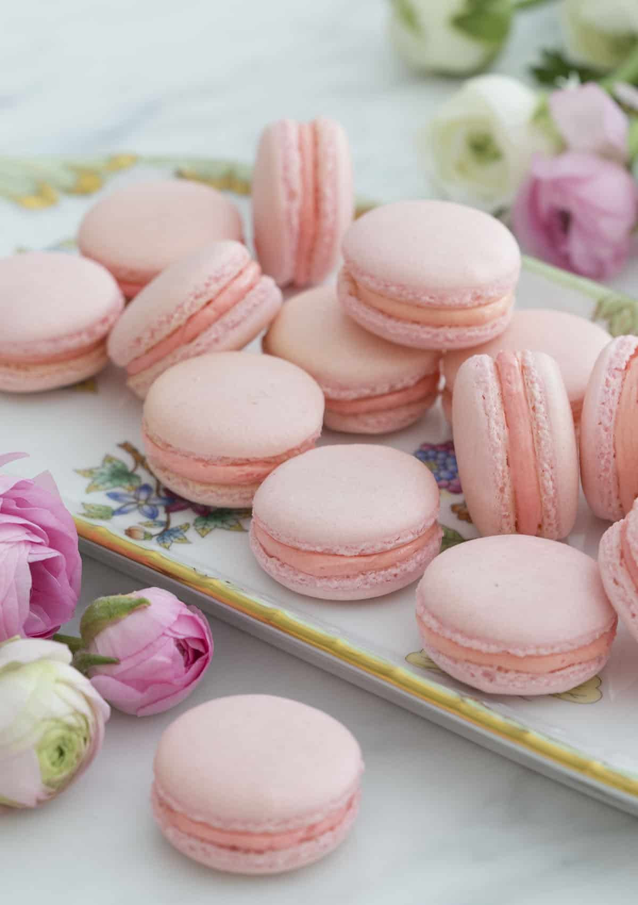

French Macarons

Description
These French macarons make a very special treat to give your friends and family.
They also look pretty on a plate for guests to indulge in when they come over.
They can definitely be finicky, but once you learn how to make macarons you’ll be hooked!
Ingredients
For the Cookie
- 100 grams egg whites
- 140 grams almond flour
- 90 grams granulated sugar
- 130 grams powdered sugar
- 1 teaspoon vanilla extract
- 1/4 teaspoon cream of tartar
For the Buttercream
- 1 cup unsalted butter, softened
- 5 egg yolks
- 100 grams granulated sugar
- 1 teaspoon vanilla extract
- 3 tablespoons water
- 1 pinch salt
Directions
For the Cookies
- Sift the confectioners sugar and almond flour into a bowl.
- Add the room temperature egg whites into a very clean bowl.
- Using an electric mixer, whisk egg whites. Once they begin to foam add the cream of tartar and then SLOWLY add the granulated sugar.
- Add the food coloring (if desired) and vanilla extract and mix in. Continue to beat until stiff peaks form.
- Begin folding in 1/3 of the dry ingredients.
- Be careful to add the remaining dry ingredients and fold gently.
- The final mixture should look like flowing lava and be able to fall into a figure eight without breaking. Spoon into a piping bag with a medium round piping tip and you're ready to start piping.
- Pipe one inch dollops onto a baking sheet lined with parchment paper (this should be glued down with dabs of batter). Tap on counter several times to release air bubbles. Allow to sit for about 40 minutes before placing in oven.
- Bake at 300F for 12-15 minutes; rotate tray after 7 minutes. Allow to cool completely before removing from baking sheet.
For the Buttercream
- Combine sugar and water in medium saucepan. Heat over low heat while stirring until sugar dissolves. Increase heat to medium/high and bring to a boil
- Put egg yolks in a stand-mixer fitted with a whisk attachment and beat until thick and foamy.
- Cook the sugar and water syrup until it reaches 240 degrees Fahrenheit. Immediately remove from heat. With mixer running, SLOWLY drizzle hot syrup into bowl with yolks.
- Continue mixing until the bottom of the bowl is cool to the touch and the yolk mixture has cooled to room temperature.
- Add in butter one cube at a time allowing each piece to incorporate before adding the next. Add vanilla and salt. Continue mixing until buttercream is smooth and creamy (about 5-6 minutes). Add food coloring if desired.
For Assembly
- Pipe your filling onto the back of half the shells. Form a sandwich and repeat. Macarons should be aged in the fridge for 1-3 days for best results. This allows the filling to soften the shells inside.
Congratulations! You've successfully made French macarons! Comment below what you thought of the recipe.
back to home